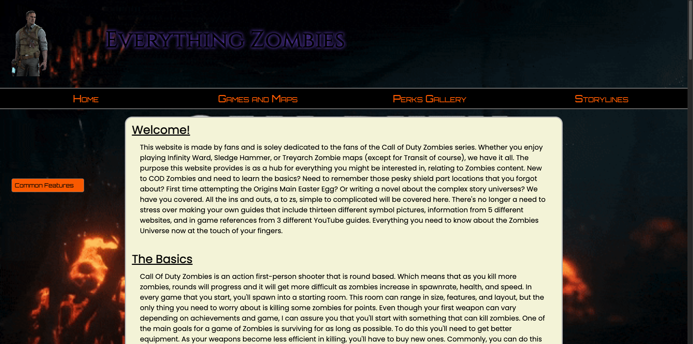

This was one of the first websites I created for one of my courses. Growing up I enjoyed playing Call Of Duty: Zombies with my friends
and I wanted to make a go-to source for detailed guides, storyline breakdowns, easter egg tutorials, map overviews, character lore, weapon stats, and
gameplay strategies from every Zombies mode across the Call of Duty franchise.